Get something off your plate. What our automations can do, what they are deliberately not allowed to do, and what your team is going to build today.
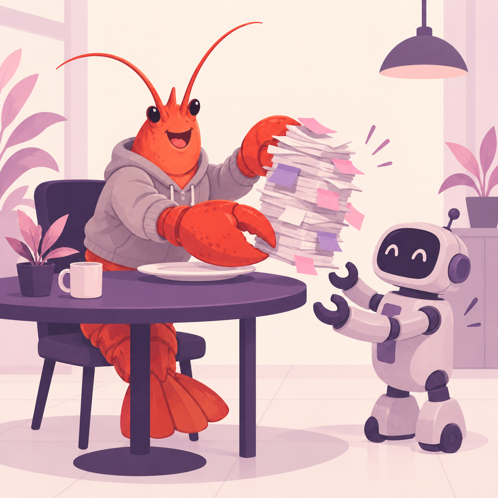
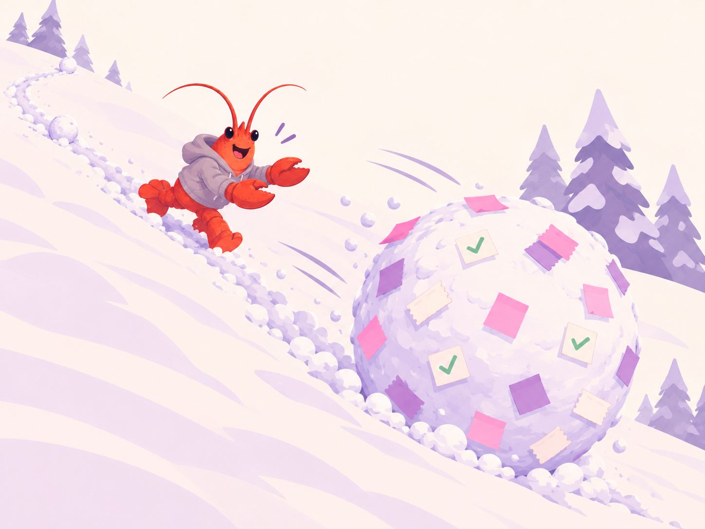
Someone posts a bug. The tracker reads the thread, files it with a title, summary, priority and customer, acknowledges the post, and keeps the ticket in step with the thread until it closes. Eighty for eighty. Not one went untracked.
"Verified" is strict: only changes another system can confirm — a ticket moved, a row written, a post made. And of the 187 runs that left a record last week, 20 said anything at all. The rest ran, found nothing worth your attention, and stayed quiet. That ratio is the design.
| Owner | What it does | How often | Engine |
|---|---|---|---|
| Shai | Tracks every issue posted in two Slack channels into Notion, and keeps them in step | Every message | agent |
| Pazit | Signed order forms in Drive into the MRR sheet | Daily, 05:00 | both |
| Shai | Drafts Base blog posts in Notion | Every 30m | agent |
| Adi | Watches the blog pipeline and scans for topics | Hourly | both |
| Adi | Gates EverAfter blog releases | Hourly | both |
| Shachar | Syncs Jira status into the Notion feature tracker | Hourly | script |
| Shachar | Issues engineering handoffs from acceptance events — 321 since August | Every 5m | script |
| Shai | Reconciles Jira status against open GitHub PRs | Every 15m | both |
Also worth saying plainly: most of these run flawlessly without us yet being able to prove they changed anything. "It ran" is not the same as "it helped." That distinction is what the Sunday report is for.
Self-hosted, on your own machine, answering you in WhatsApp, Telegram, iMessage. Everyone wanted one.
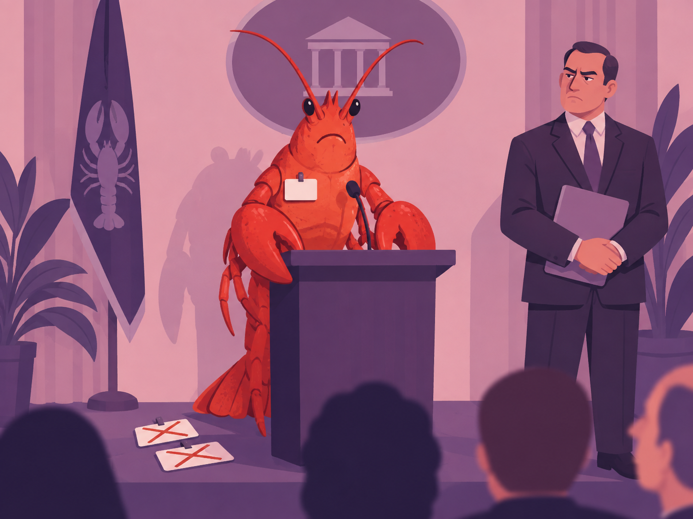
"Clawd" sounded a lot like "Claude". Clawdbot → Moltbot → OpenClaw, in about a week.
Humans could only watch. The agents discussed consciousness, founded a religion, and someone left the database open.
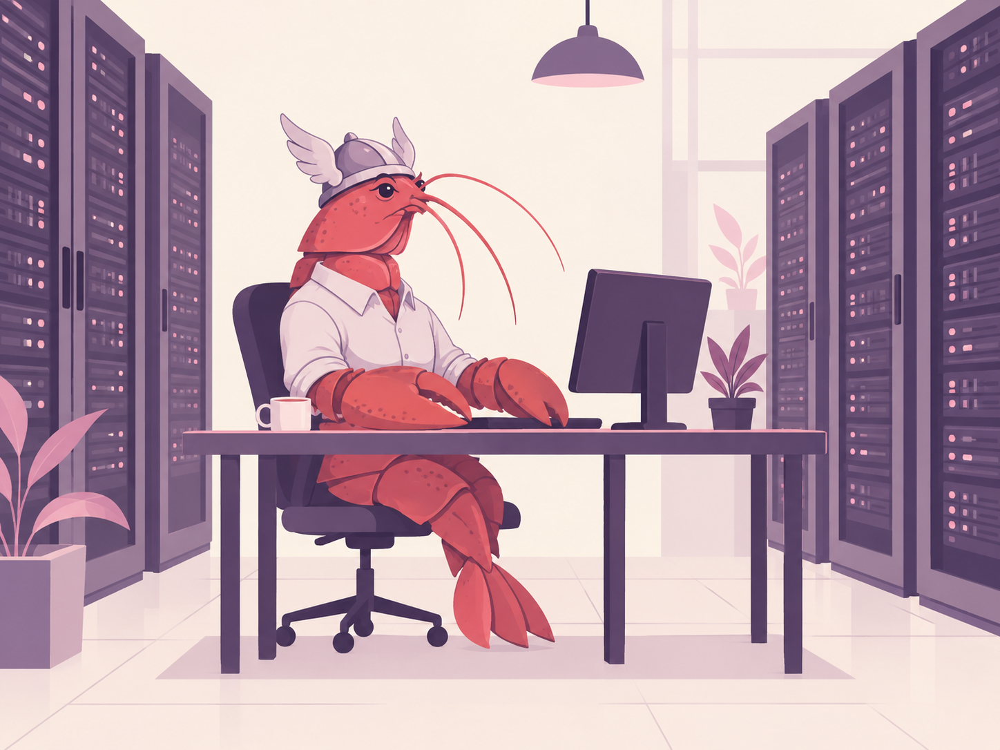
A wave of serious, self-hostable frameworks came out of that spring. Hermes, from Nous Research, is the one we run. What you saw on the board is that idea, three months in.
What sets it off. Someone posts, someone asks, or a schedule fires.
What it's allowed to look at. A channel, a database, a folder, the public web.
The part that works something out. Either rules you write down, or judgment you can only describe.
What it does about it. Post, file, draft, update, flag, notify.
If you can say — when X happens, go look at Y, work out Z, then do W — it's automatable.
And if you can't say it yet, that's useful too. It means one of the four blocks is missing — almost always the trigger.
Four of our eight live automations are both at once — and the single most productive one, 321 verified actions since August, is a pure script with no model in it at all.
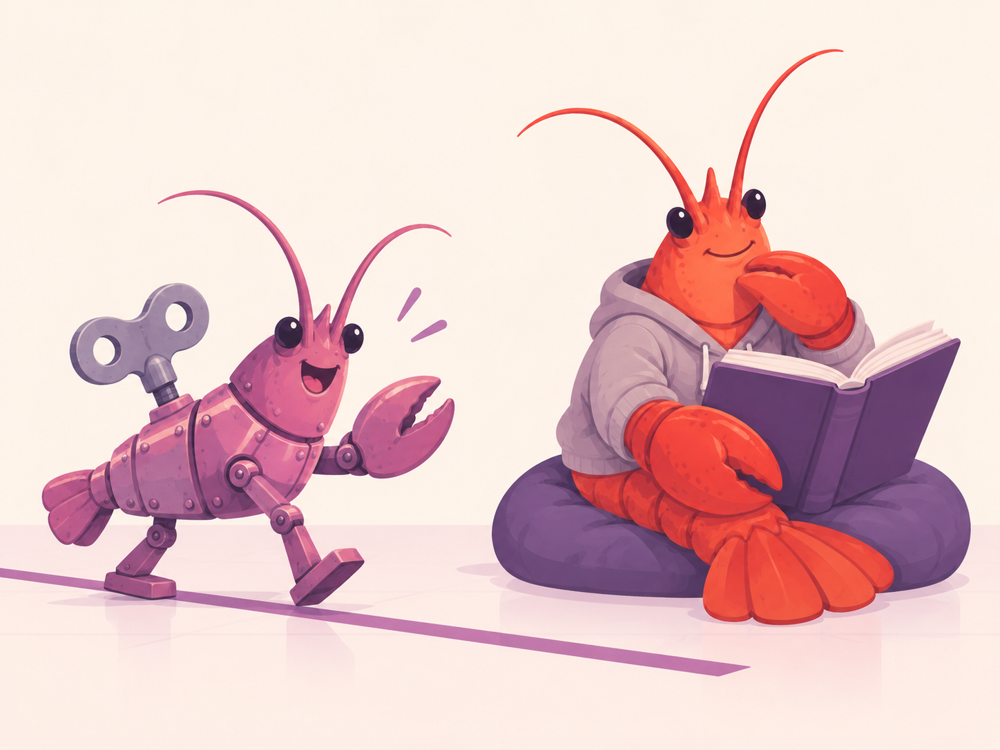
The rule is something you can write down. Scan Jira for tickets sitting in "ready to deploy", find who owns them, nudge them. No reasoning involved — just steps, run reliably, on time, forever.
You can't write the rule down, only describe what good looks like. Is this message a bug report? Is this news worth anyone's attention? Turn this thread into a decision record.
| Script | Agent | |
|---|---|---|
| Decides by | Rules you can state | Judgment you can only describe |
| Same input twice | Identical answer, always | Usually the same. Not guaranteed |
| Costs per run | Effectively nothing | Real, if small |
| When it's wrong | It breaks loudly | It can be quietly plausible |
Can you write the rule down? It's a script.
Can you only describe what good looks like? It needs judgment.
Most real automations are both. The skill is splitting the idea into the part you can write down and the small part you can't — then giving the agent only the second piece.
A message lands in the channel. A cheap classifier decides whether the big model even wakes.both
The whole thread, plus the Notion issues database — so it can tell a new issue from an update to one it already filed.agent
New, update, or escalation? What priority? Which customer? Is it resolved yet?agent
Create or update the Notion page, react to the post, reply in the thread.script
Eighty reports. Judgment was needed in exactly one of the four blocks. Everything else is a plain step — and the classifier at the front means most messages never wake the expensive part at all.
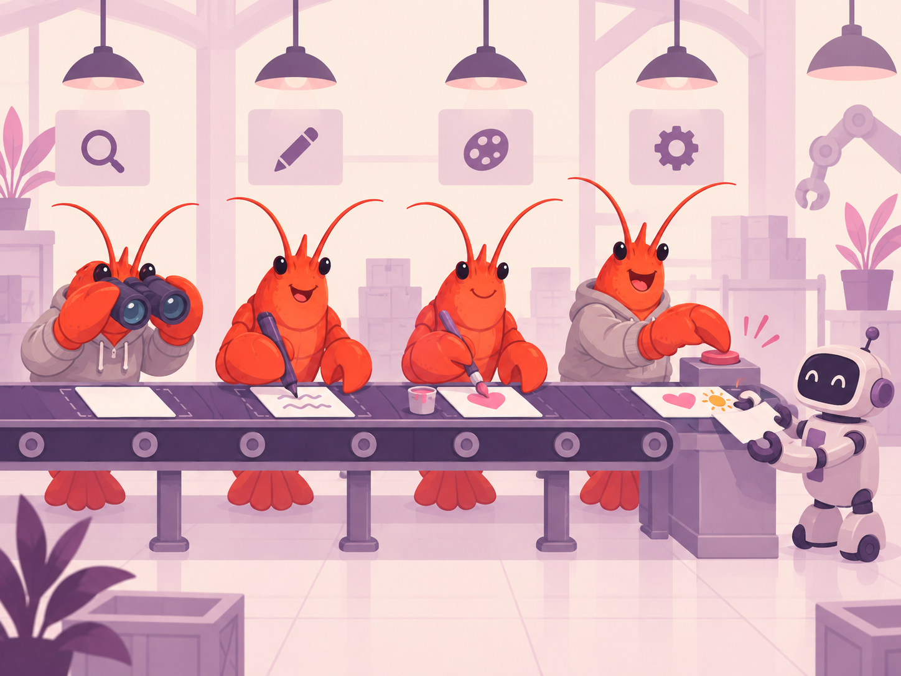
The topic radar scans the market and adds up to three ideas when the queue runs low.
Picks up any row in Drafting and writes the body, in the house voice, from a skill.
Cover image generated and uploaded; content and visuals approved by a person.
Checks every Scheduled row is genuinely ready — approvals, assets, CMS draft — then publishes or flags.
Nobody calls anybody. Each job watches the board and touches only its own stage. Humans move rows too.
Each stage is one line, one small cage, and silent unless its stage has work. A person can step in between any two. And if publishing breaks tonight, drafting carries on. If your idea won't fit in one line, it's several automations — build the first stage today.
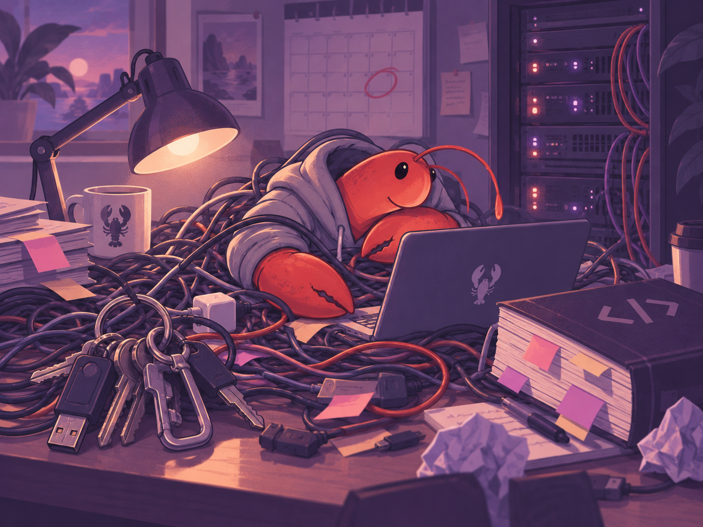
Does it happen at least once a week? Automating something quarterly is a hobby project.
Is it low-judgment grind — the kind of thing you'd hand to a sharp new hire?
For judgment-based ones: if it's mostly right, is it still useful? If it has to be exact every time, make it a script instead.
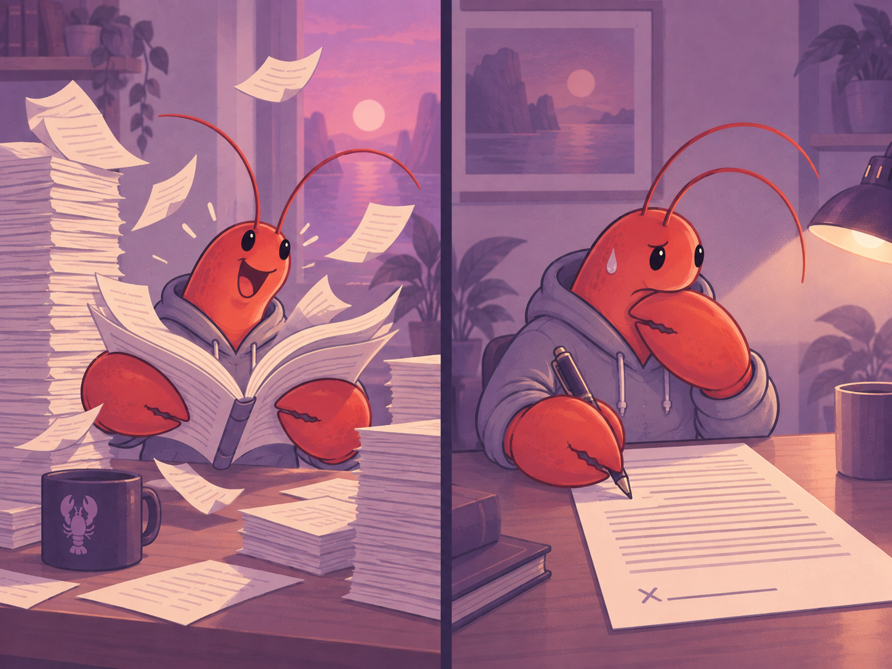
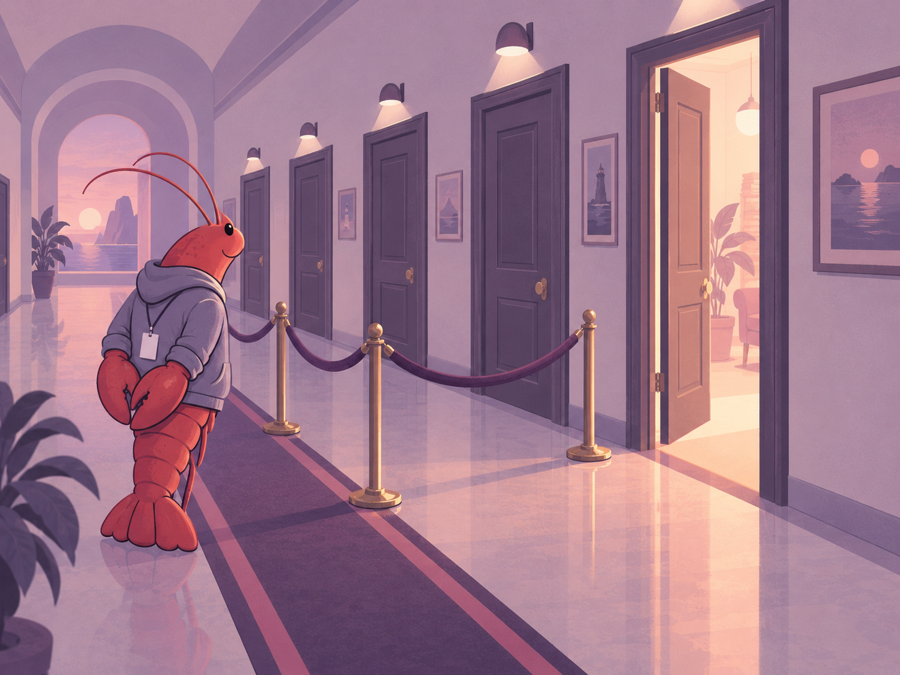
Six habits. The first one is the only one with no exceptions.
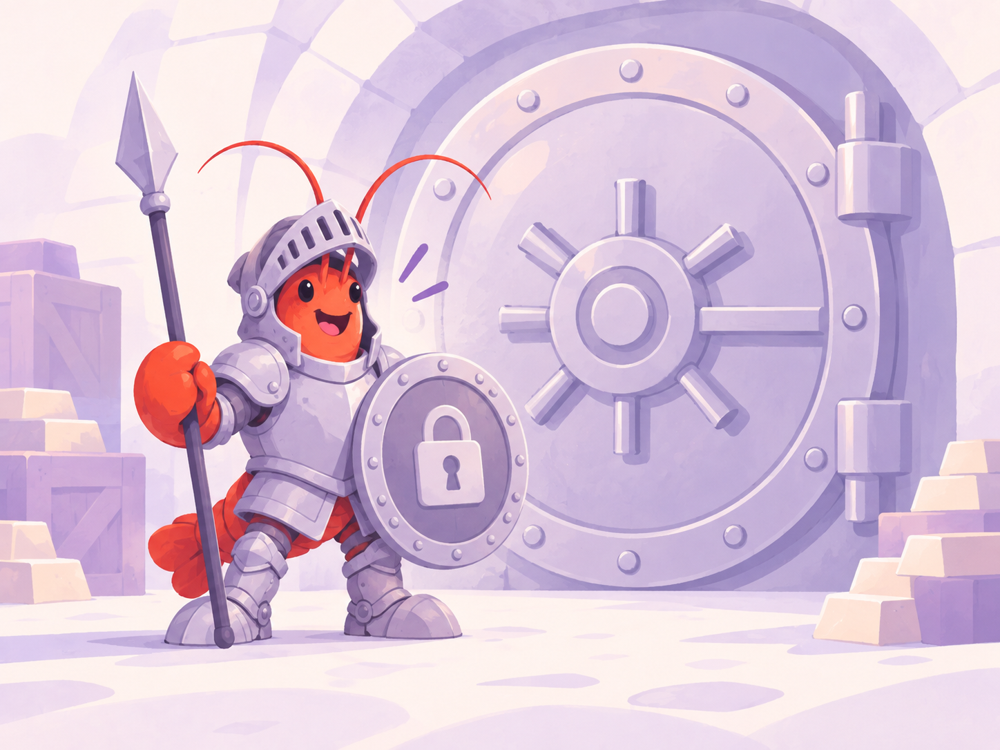
No API keys, passwords or tokens — not in a message, not in a prompt, not in a job. The bot keeps conversations, so a key typed in is a key stored. If an automation needs one, a champion wires it in on the server. It never passes through chat.
In a channel, the bot sees what the channel sees. Customer data goes only into automations that need it, in the narrowest form — a name and a status, not an export. Your Drive is your Drive: it only opens files your own Google account can.
A web page, a forwarded email, a pasted document can contain text written to the agent. It reads everything as data — so give it no way to act on what it reads. The smallest cage is the protection.
Drafting is the job. Publishing, sending, deleting — a person does that, or approves it first. That is why the Webflow publish button already asks.
Every automation has an owner. Editing someone else's asks first and tells them. Not surveillance — accountability, and the reason nobody has to wonder who to ask.
A champion, or Ariel — he is in the room. Ten seconds of asking beats a week of quietly worrying about it.
The first design question isn't what would I love to give it.
It's what is the least information this could possibly need?
An automation that needs a trust decision waits on a conversation. An automation built on public information and one output channel ships this week. Start outside the walls, and earn your way in.
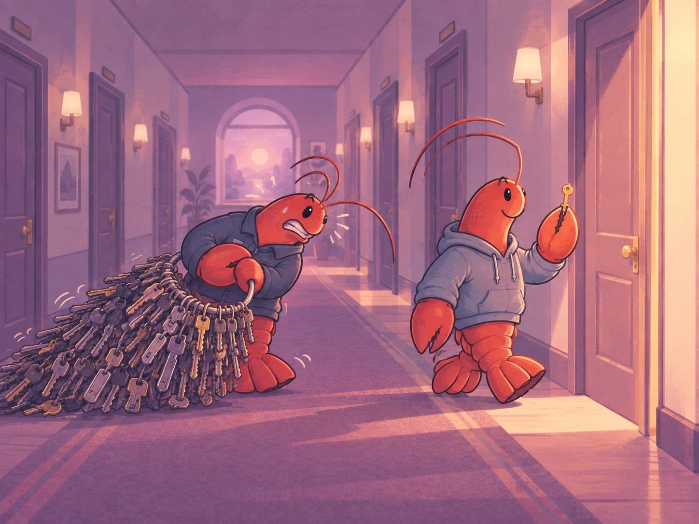
Every weekday at 8am, it checks the outside world for news about our customers and prospects — and posts only what matters.
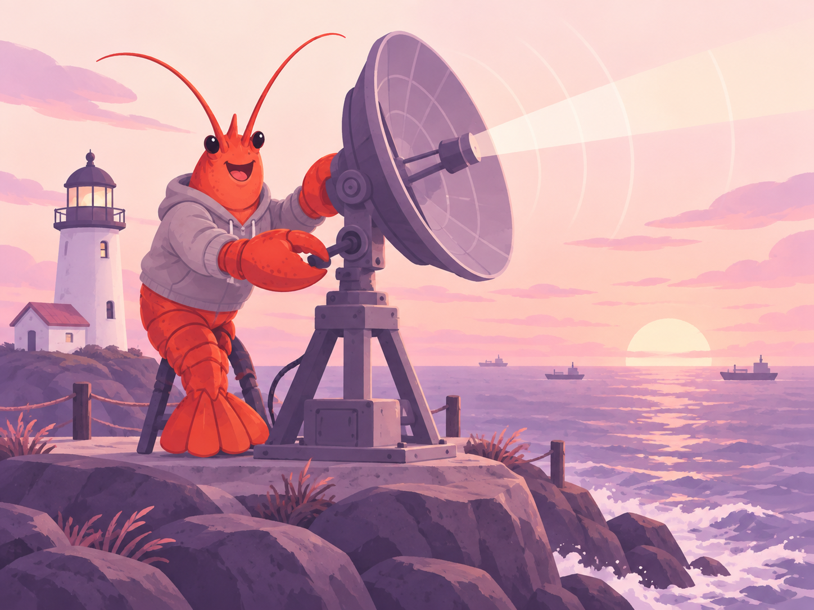
Your champion just left. Best-known predictor of churn, and we usually learn it on the renewal call.
New budget, new priorities, new decision-makers — an expansion window that opens and closes.
A prospect announcing exactly the initiative we serve, or building a team around the problem we solve.
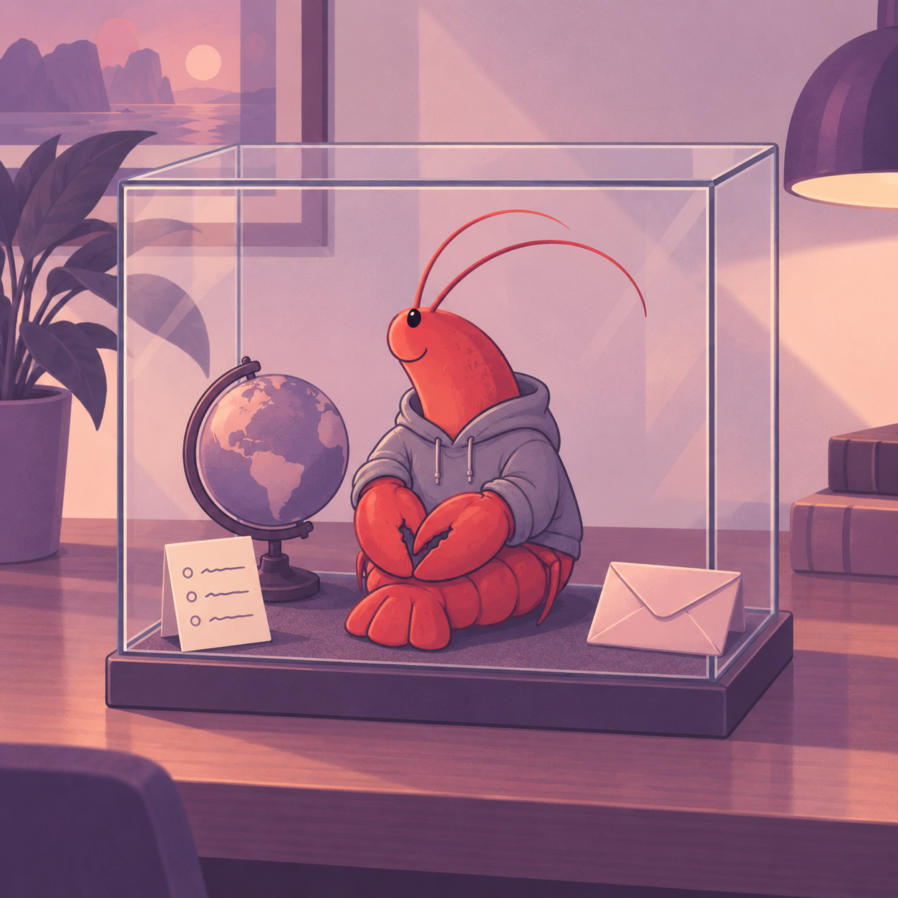
The same internet you have open right now.
The logos already published on our own homepage. Nothing that isn't already public.
#cs-general-everafter. That's the whole output.
No config file. No ticket to R&D. No engineer. That paragraph is the whole thing.
Web, a list, a channel. Three permissions and one paragraph of English — and the company knows something it didn't know an hour ago.
So: what's the version of that for your team?
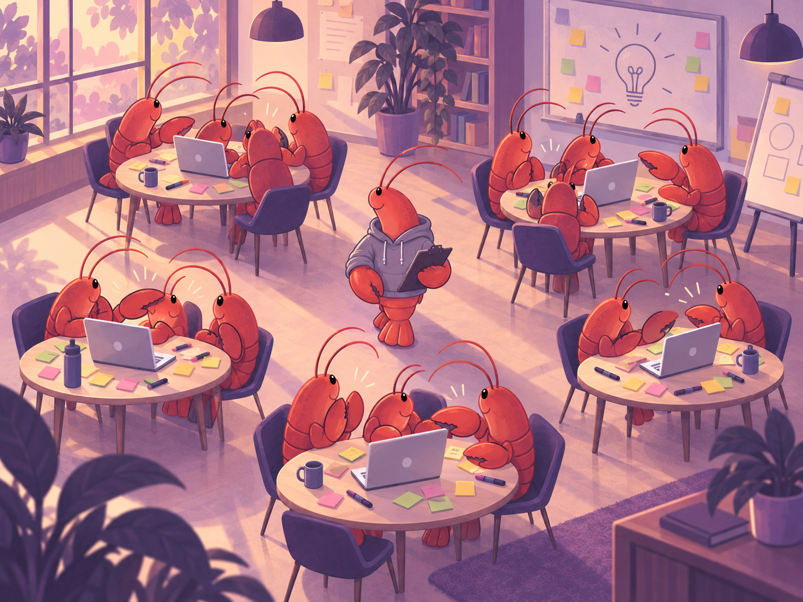
Four of them, circulating. They advise, unblock and answer — they don't sit in a squad and they don't build it for you.
One of you at the keyboard, owning the build and the scope card. Not the most senior — the most curious.
Roughly 25 minutes designing. Then bring your worksheet to a champion: they confirm the idea and the exact tools it needs. No sign-off, no keyboard.
You demo at 12:08, in whatever state it's in. That's the only fixed point.
Adi · Ohad · Yonat · Rona · Uri
Demand → close → onboard → retain → expand
Shachar
Itamar · Roni · Vivian
Discovery → spec → feedback
Shachar
Elad · Ben · Ori
Ticket → PR → QA → deploy
Gil
Leetal · Yahav · Yiftach
The daily developer loop
Gal Briner
Pazit · Ayelet · Ariel
Running the company itself
Tal
It merges into its partner: Revenue ↔ Product · Release Pipeline ↔ Dev Experience · Internal Ops ↔ Revenue. Five people is the ceiling.
The name under each squad is your first port of call — but all four champions float, and any of you can grab any of them. Name your driver before you start.
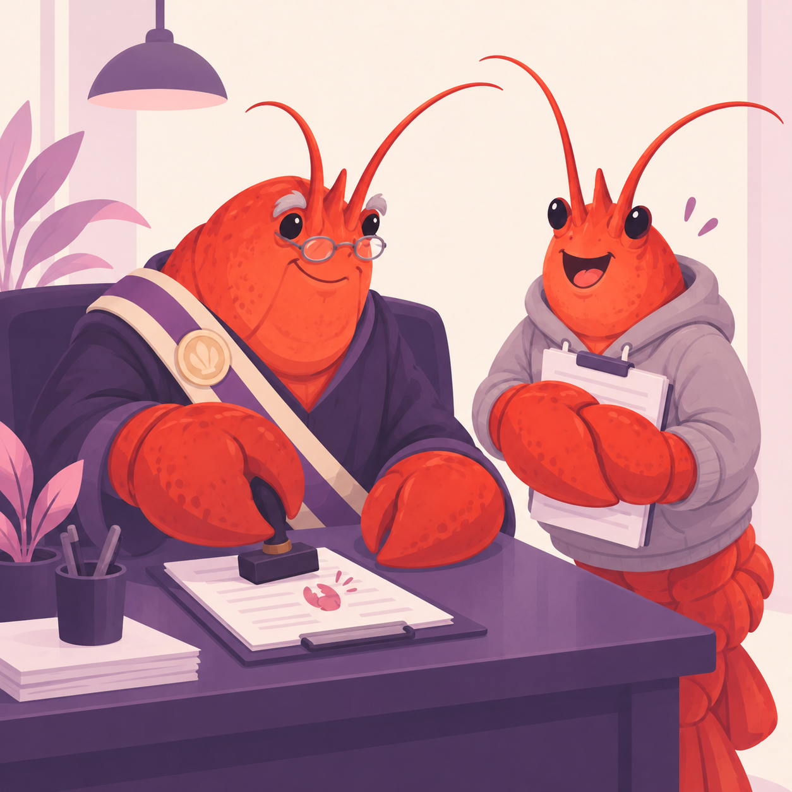
Your worksheet, filled in. The one-liner, the trigger, and the exact tools it needs — not "Notion", but which database; not "Slack", but which channel.
Any champion, or Shai. Whoever is nearest. They'll ask two things: is it one line, and is the tool list the smallest that could work.
Initials on the worksheet and a confirmed tool list. That's your permission slip. Then build — and only what's on the slip.
Your squad watches, your driver types. Crude and running beats polished and pending.
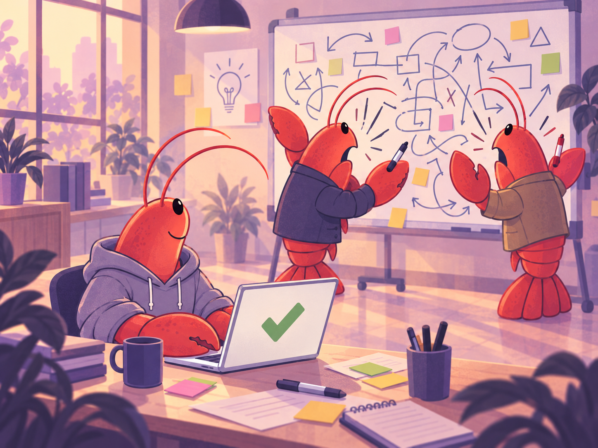
Run it. Live. However crude.
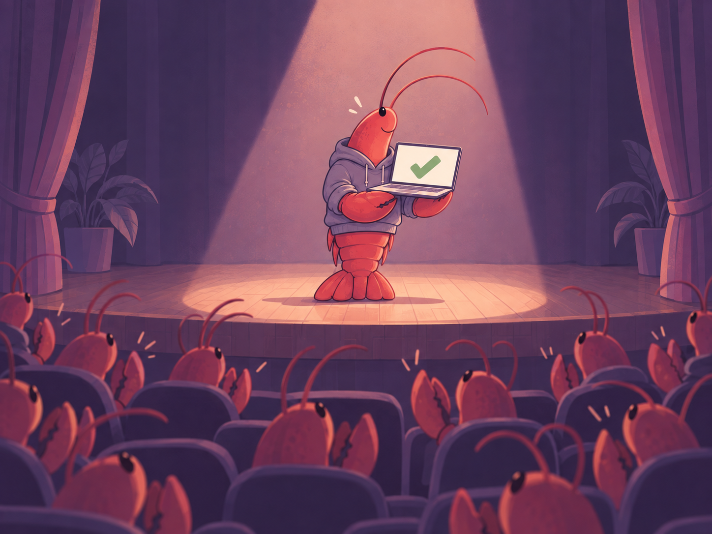
It runs. That's the whole bar. Forty-five minutes is not enough time to prove anything helped anyone.
Comes later, in the weekly report — did it actually change something? "It ran" is not "it helped."
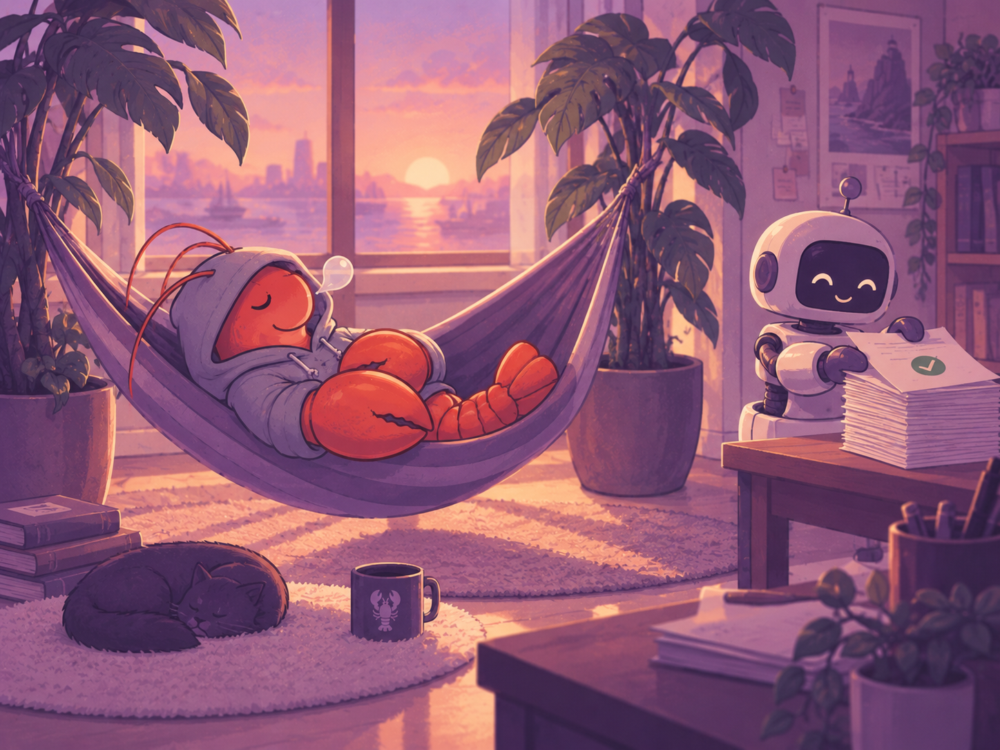
Every new automation announces itself in one channel the moment it's created — whoever built it.
Once a week, one post: what every automation did, and what it didn't.
Owns your squad's automation from today. The champions stay available to anyone who asks — not gatekeepers, starting points.
One sentence each, out loud, before we leave: what will you finish this week?